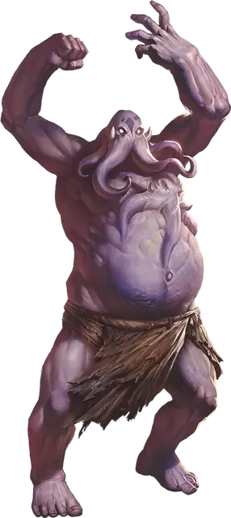

Эттин-цереморф
Ettin Ceremorph
Большая Аберрация, обычно законно-злая

Класс Доспеха 15 (природный доспех)
Хиты 104 (11к10 + 44)
Скорость 40 футов
| мод | спас | ||
|---|---|---|---|
| СИЛ | 18 | +4 | +4 |
| ЛОВ | 14 | +2 | +2 |
| ТЕЛ | 18 | +4 | +4 |
| мод | спас | ||
|---|---|---|---|
| ИНТ | 18 | +4 | +7 |
| МДР | 15 | +2 | +5 |
| ХАР | 14 | +2 | +2 |
Навыки Восприятие +8
Сопротивление урону психическая энергия
Иммунитет к состояниям бессознательность, испуг, очарование, ошеломление
Чувства тёмное зрение 120 футов, пассивное Восприятие 18
Языки Великаний, Глубинная речь, Подземный, Телепатия 60 фт.
Опасность 8 (3900 опыта)
Бонус мастерства +3
Особенности
Сопротивление магии. Цереморф совершает с преимуществом спасброски от заклинаний и прочих магических эффектов.
Действия
Мультиатака. Эттин-цереморф совершает одну атаку Размашистым ударом и одну атаку Щупальцами. Эттин-цереморф может заменить одну из атак атакой Психическим разрядом, если он доступен.
Размашистый удар. . Рукопашная атака оружием: +7 к попаданию, досягаемость 10 футов, одна цель. Попадание: 22 (4к8 + 4) дробящего урона.
Щупальца. . Рукопашная атака оружием: +7 к попаданию, досягаемость 10 футов, одно существо. Попадание: 15 (2к10 + 4) урона психической энергией. Если цель Большого размера или меньше, она становится схваченной (Сл высвобождения 14) и должна преуспеть в спасброске Интеллекта Сл 15, иначе станет ошеломленной, пока не перестанет быть схваченной.
Извлечение мозга. Рукопашная атака оружием: +7 к попаданию, досягаемость 5 футов, один недееспособный гуманоид, схваченный эттином-цереморфом. Попадание: Цель получает 55 (10к10) колющего урона. Если этот урон уменьшает хиты цели до 0, эттин-цереморф убивает цель, извлекая и пожирая её мозг.
Психический снаряд (3/день). Дальнобойная атака оружием: +8 к попаданию, дистанция 120 футов, одно существо. Попадание: 17 (2к10 +4) урона психической энергией и цель должна преуспеть в спасброске Интеллекта Сл 15, иначе станет ошеломлённой до конца своего следующего хода.
Описание
Свежеватели разума [mind flayer], которые описаны в "Бестиарии", создаются с помощью цереморфоза — процесса, который начинается с имплантации головастика-иллитида в мозг гуманоидного носителя. Свежеватели разума подвергали великанов этому процессу в попытке создать более крупных и сильных свежевателей разума, но все эти эксперименты закончились неудачей: тело великана просто слишком велико, чтобы им мог управлять один головастик.
Эттины, однако, оказались идеальными испытуемыми. Два мозга эттина обеспечивают достаточное количество пищи для двух головастиков, и эти два головастика способны трансформировать все тело эттина целиком, создавая эттина-цереморфа. В рамках процесса трансформации одна из голов эттина погружается в тело, и этот мозг сосредоточен на управлении телом. Другая голова фокусируется на мышлении и псионической силе, хотя ее мощь не так велика, как у свежевателя разума.
Эттины-цереморфы служат колониям свежевателей разума, защищая старшие мозги [elder brain], которые правят сообществами, и охраняя их сокровища. Они не хранят никаких воспоминаний о своем предыдущем существовании в качестве эттинов.